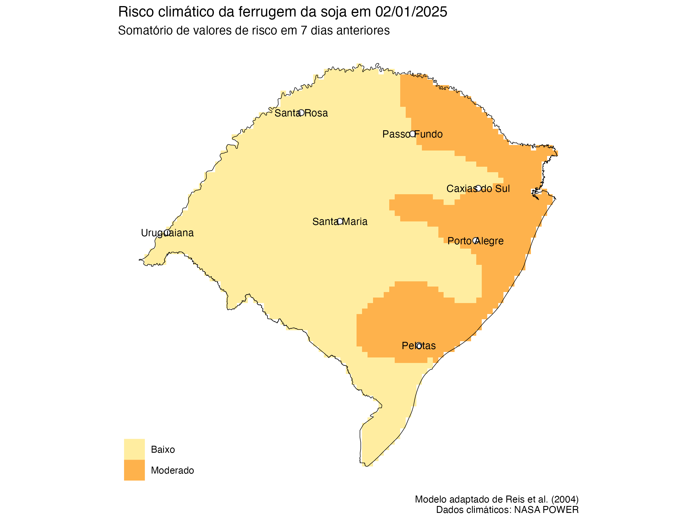
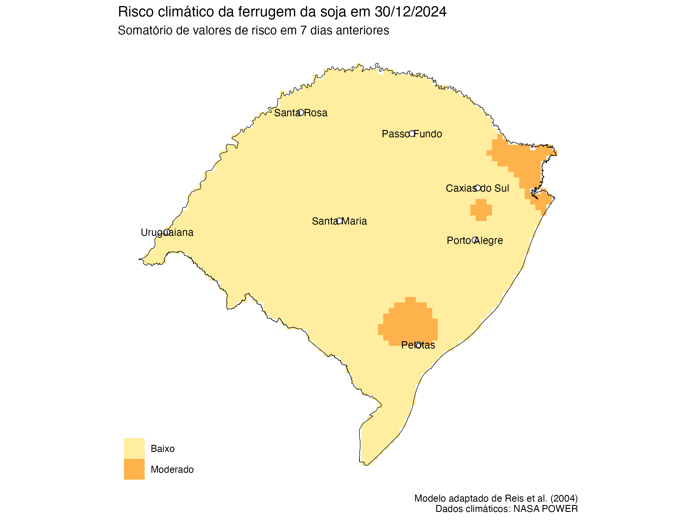
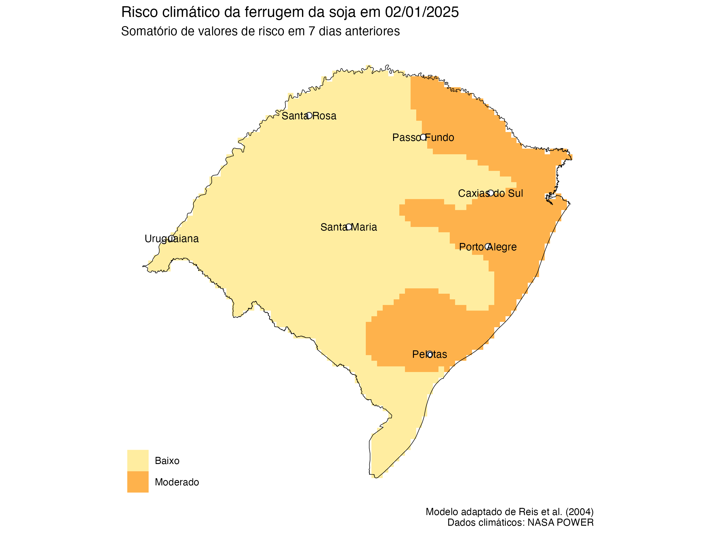
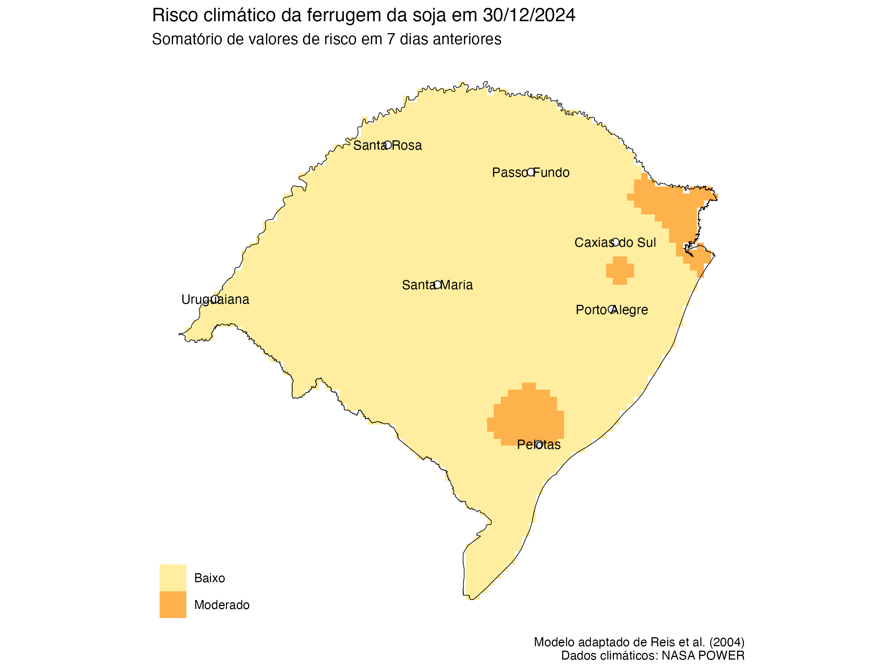

Mapas de risco da Ferrugem da Soja Safra 2024/25
22 de janeiro
20 de janeiro
17 de janeiro
14 de janeiro
12 de janeiro
08 de janeiro
05 de janeiro
02 de janeiro

30 de dezembro

27 de dezembro
24 de dezembro

21 de dezembro
18 de dezembro


